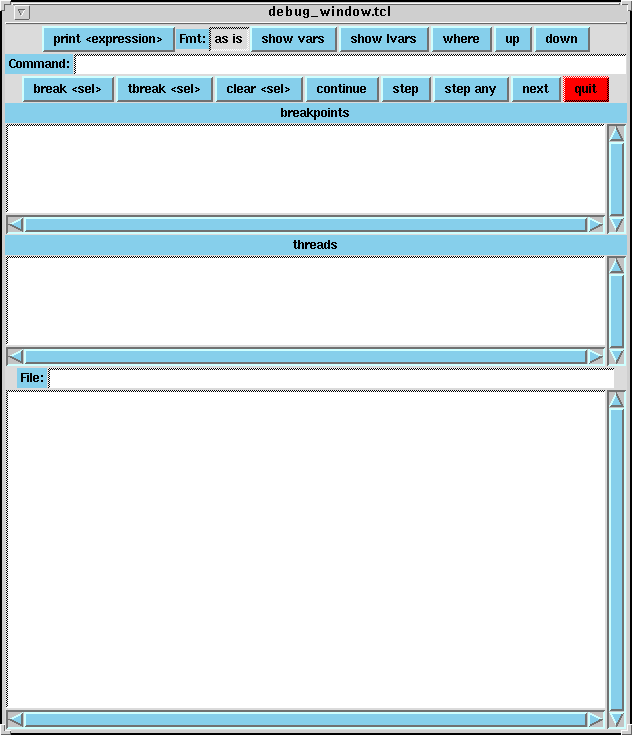

Jedaは、シンプルなデバッガーが付随しています。これによって、ユーザーは 実行中に、Jedaのコードが何をしているのかを覗くことができます。
デバッガーを使用可能にするためには、'jeda'スクリプトに -g オプションを 使用します。jeda -g -dl simple.j
この '-g' オプションによって、コンパイルされたユーザーコードは、 デバッグのための追加情報が付加され、デバッガーを使用可能にした 実行時ライブラリとリンクされます。(性能上の理由から、デバッガーを利用する ライブラリと、通常の実行用ライブラリの２種類が提供されています。)
breakpointステートメントが実行されると、デバッガーが呼び出されます。breakpoint ;breakpointステートメントは、ファイル名の文字列を付加することが出来、 そのファイルの内容は、デバッガーのコマンドとして、デバッガーセッション の初めに実行されます。 以下のステートメントは、"command.jdb"ファイルに書かれたコマンドを実行します。breakpoint "commands.jdb" ;もし、ファイル内のコマンドが、'continue'コマンドを含んでいると、デバッガー の実行は終了し、実行が継続されます。同様に、'next'、'step'、'stepany'の コマンドは、コントロールを次の場所に移動します。(ファイル内のこうした コマンド以降の部分は、実行されないことに注意)
ファイル内の、# で始まる行は無視されます。プラス引数 +jeda_debug_on_error が指定されていると、error()が呼ばれた時点、 もしくは、その他の実行時エラーを検出した際に、デバッガーが起動されます。
Jedaデバッガーが起動されると、"jdb> "プロンプトを表示して、ユーザーの コマンド入力を待ちます。ユーザーインターフェースは、GNUreadlineライブラリ によって作られているので、Emacsのようなコマンドライン エディットが可能です。 詳しくは、 readline のドキュメントを参照してください。
helpコマンドは、使用できる全てのコマンドを表示します。 '?'は、helpと同じです。
printコマンドは、表現式の値を表示します。 p は、printと同じです。jdb> print 3+2printコマンドは、int、bitタイプのデータ表示に、以下のフォーマット 文字を指定することが出来ます。
5
jdb> print i
0
jdb> p num_thread
4x hexadecimal
h hexadecimal
d decimal
o octal
b binary
continueコマンドは、実行を継続します。 c は continueと同じです。
nextコマンドは、次の行(関数呼び出しをふくむ)を実行します。 n は、 nextと同じです。
stepコマンドは、次の行に移動します。このコマンドでは、同じスレッドの実行 のみに、ブレークがかかります。 s は、stepと同じです。
stepanyコマンドは、つぎの行に移動します。このコマンドでは、どのスレッドの 実行でも、ブレークがかかります。 sa は、stepanyと同じです。
breakコマンドは、ブレークポイントを <line> の行 に設定します。 ファイル<file>の指定はオプションです。 b は、breakと同じです。
clearコマンドは、<line> 行のぶれーくぽいんとを解除します。 ファイル<file>の指定はオプションです。
tbreakコマンドは、一時的なブレークポイントを <line> 行に設定します。 ファイル<file>の指定はオプションです。一時的なブレークポイントは、 そこでブレークがかかると解除されます。 tbは、tbreakと同じです。
backtraceコマンドは、現在の実行スタックを表示します。 Backtrace command shows the current execution stack. bt とwhere は backtraceと同じです。
listコマンドは、ソースコードを表示します。 lは、listと同じです。 以下の、引数を使用することが出来ます。
- list
次の１０行を表示します。- list [file:]<startnum> [, <endnum.]
指定された行を表示します。- list [file:]<funcnname>
関数の開始部を表示します。
assignコマンドは、 <exp> 表現式を <left>表現式に代入します。
upコマンドは、スコープを、[<num>で与えられた分]上に移動します。
downコマンドは、スコープを、[<num>で与えられた分]下に移動します。
threadコマンドは、スコープをあたえられたidをもつスレッドに移動します。
showコマンドは、様々な情報を表示します。以下の引数がサポートされています。
- show vars
現在のスコープでの全ての変数を表示します。- show lvars
現在のスコープでの全ての一時変数を表示します。- show threads
システム内のすべてのJedaスレッドを表示します。- show lthreads
現在のスコープのスレッドおよび、その子孫スレッドを表示します。
quitコマンドは、シミュレーションの実行を終了させます。($finishと同じ)
windowは、tcl/tkベースのユーザーインターフェースを起動します。現行のウインドウのイメージを下に示します。
ウインドウ上部は、デバッガにコマンドを送るために使用します。ブレークポイント フレームは、アクティブなブレークポイントを表示します。
- 'print <expression>' ボタンは、選択されている表現式で print コマンドを実行します。
- Fmtは、printボタンのフォーマットを選択します。
- 'show vars' 'show lvars' 'where' 'up' 'down' のボタンはそれぞれのコマンドを実行します。
- Commandエントリ部は、任意のコマンドを実行するのに利用します。
- 'break <sel>' 'tbreak <sel>' ボタンは、選択されたソースラインに、break または tbreak を設定します。
- 'Clear <sel>' ボタンは、選択されたブレークポイントをクリアします。選択は、ブレークポイントリストかソースで行なうことが出来ます。
- 'continue' 'step' 'step any' 'next' 'quit' ボタンは、それぞれのコマンドを実行します。
スレッド フレームは、アクティブはスレードを表示します。スレッドをダブルクリックすると、ソース フレームに対応する実行ラインが表示されます。
ファイル エントリは、現在ソース フレームに表示されているファイル名を表示します。
ソース フレームは、ソースコードを表示します。現在の実行場所は、左部に > で示されます。ブレークポイントと一時ブレークポイントは、B と T にて示されます。